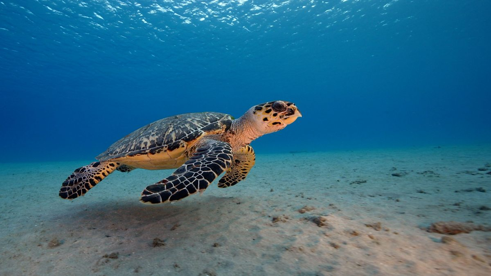

Leatherback Turtles
Olive Ridley Turtles

Hawksbill Turtles
Green Turtles

Loggerhead Turtles

Where Turtles nest in Sri Lanka

Beautiful moments caught in camera lens


| Name | Location | Conservation Status | Description |
|---|---|---|---|
| Olive Ridley Turtle | Found in coastal waters around Sri Lanka | Endangered | The Olive Ridley turtle is known for its distinctive heart-shaped carapace and its synchronized nesting behavior, where thousands of turtles come ashore to lay their eggs at the same time. |
| Green Turtle | Found in coastal waters around Sri Lanka | Endangered | The Green turtle is named for its green fat and cartilage, and is one of the largest sea turtles in the world. They are herbivores and feed on sea grass and algae. |
| Hawksbill Turtle | Found in coastal waters around Sri Lanka | Critically Endangered | The Hawksbill turtle is known for its beautiful shell, which is prized for its use in jewelry and other decorative items. They feed on sponges and other invertebrates. |
| Loggerhead Turtle | Found in coastal waters around Sri Lanka | Vulnerable | The Loggerhead turtle is named for its large head and powerful jaws, which allow it to eat hard-shelled prey such as crabs and lobsters. They are known for their long migrations, which can span thousands of miles. |
| According to the Data from the Sri Lanka Wildlife Conservation Society | |||